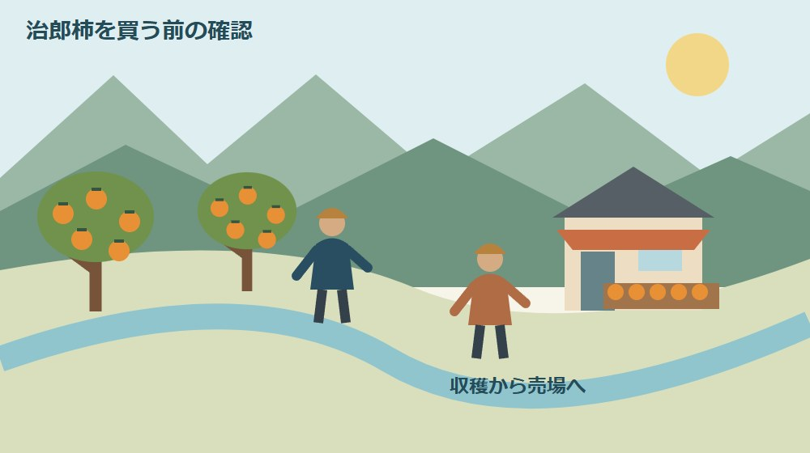
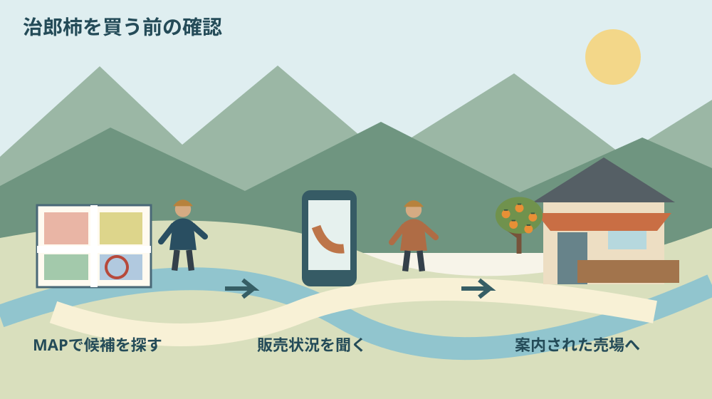

森町の治郎柿直売所｜秋の販売先の探し方

Q. 森町の治郎柿は、どの直売所へいつ買いに行けばいい？
森町観光協会の「とうもろこし・治郎柿MAP」で候補を探し、店舗へ販売状況を確認してから訪ねます。JA遠州中央は購入期を10〜12月と案内し、森の市などを紹介しています。ただし2026年10月1日の在庫や各店の販売開始日は未確認です。今日は候補を一店選び、希望日の販売予定を確かめるところまでにします。
柿の季節を、収穫する人の段取りと一緒に迎える
柿を買う側にとって秋は楽しみな季節ですが、農家には収穫、選別、箱詰め、売場への搬入が重なる時期です。直売所に実が並ぶまでの仕事を忘れて、「せっかく来たのだから買えるはず」とは考えたくありません。
大石浩之（磐田市／不動産業）です。私は、森町の特産品を楽しむときも、売場を支える人の時間と、買いに行く家族の移動を一緒に考えます。町の魅力を知るだけでなく、空振りを減らす確認の順序を、治郎柿の直売所探しで整理します。
この記事は2026年10月1日に公式情報を確認しました。JA遠州中央の農産物百科は、次郎柿（治郎柿）を買える時期として10〜12月を掲載しています。10月になったので確認を始める目安にはなりますが、10月1日の販売開始を意味しません。
収穫期と店頭在庫は別です。今回、各店へ電話して在庫を聞いたわけではありません。買える日を断定せず、候補店、公式の案内、問い合わせる内容をそろえます。森町産を買いたいという希望も、確認時にきちんと言葉にしてください。
2026年の直売所案内は観光協会から探す
森町観光協会は2026年5月28日、「とうもろこし・治郎柿MAP」の掲載を告知しています。特産品を購入できる直売所の案内図で、同協会サイトの「観光パンフレット」ページからダウンロードできるという説明です。
探し方は、観光協会のお知らせを開き、ライブラリの観光パンフレットへ進む順序です。記事末尾に両方の入口を載せています。検索結果で古い地図画像を拾うより、案内主体のページからたどる方が、地図の出どころを確認しやすくなります。
お知らせには地図アプリの案内もありますが、本文が説明しているのはとうもろこし直売所の地図です。治郎柿という言葉が同じページにあるからといって、そのアプリが柿の販売店を網羅しているとは読みません。この違いは訪問先を選ぶ際に気を付けたい点です。
私は、MAPを「今営業している店の一覧」ではなく、「次に販売状況を聞く候補の一覧」として使うことを勧めます。掲載された店を全部回る必要はありません。買いたい量や行ける日に合う候補を一つ選ぶだけで、次の確認が具体的になります。
パンフレットの画面で資料が見つからない場合は、掲載告知に戻って資料名を確かめてください。画像だけを家族へ送るなら、元の公式ページも一緒に送ります。紙の地図は便利ですが、収穫状況や臨時休業まで更新されるものではありません。
候補店の一つ、森の市の確認先
JA遠州中央の「森の市」紹介ページは、治郎柿を主な商品の一つとして掲載しています。所在地は周智郡森町森1731-2、電話は0538-85-0831です。遠州森駅から西へ約200メートル、JA森支店の道を挟んだ向かいという案内があります。
掲載営業時間は9時〜18時で、定休日の欄は年末年始・盆を除き年中無休、駐車場はありとされています。これは店舗の基本情報です。営業時間内に必ず治郎柿が残っていることや、希望する数量を買えることを保証する情報ではありません。
JAの農産物百科では購入期を10〜12月とする一方、森の市の店舗紹介は11月の治郎柿を旬の商品として挙げています。二つは矛盾ではありません。品目全体の購入期と、ある店舗の季節紹介では説明する範囲が違うからです。
森の市へ確認するなら、「森町産の治郎柿を、何月何日に家庭用で買いたい。販売予定はありますか」と質問を絞れます。贈り物に使う場合は、箱入りや発送の扱いも別に尋ねます。この記事では予約、取り置き、発送が可能だと確認したものではありません。
車で訪ねる方は、地図上の店名だけでなく住所もそろえます。遠州森駅からの案内を使う場合も、歩ける距離か、買った果物を持って帰れるかを家族の条件で考えます。駐車場の記載があっても、当日の空き具合までは分かりません。
生産者の直売案内は、作物ごとの欄を読む
佐野ファームの直売情報には、「森の治郎柿」の案内と、収穫状況による臨時休業、来店前の電話確認を勧める記載があります。生産者が収穫の状況に合わせて売場を運営していることを、訪問の前提に置く必要があります。
同ページには柿の直売期間が記載されていますが、その予定日に年の表示を確認できませんでした。そこで本記事では、その日付を2026年の確定した販売開始日として採用しません。日付だけを家族の予定表へ写す前に、対象年を尋ねてください。
佐野ファームのページは、とうもろこしや直売所マルシェの情報も一緒に掲載しています。作物や売場によって営業時間の記載が異なります。上の方にある時間を、柿の販売時間へそのまま当てはめず、「治郎柿を買いたい」と伝えて確認する読み方を勧めます。
私は、年のない案内を見たとき、店の更新が悪いと決めつけるより、自分が必要な情報を一つ聞く方を選びます。生産者は収穫と販売の双方を担っています。公開ページで読めることは先に読み、電話では今年の販売予定など、残る疑問だけを尋ねます。
治郎柿と次郎柿、原木と販売場所を分ける
JA遠州中央の農産物百科は「次郎柿（治郎柿）」という表記を使い、産地レポートでは森町柿部会が2008年から治郎柿の名称で出荷していると説明しています。呼び名が違うページも探すときの手がかりになりますが、店頭では産地表示も確認してください。
森町の「文化財」ページには次郎柿原木が掲載されています。町の「史跡・名勝・天然記念物」の解説も、次郎柿原木が県指定天然記念物であることを紹介しています。原木を守る取り組みと、収穫した柿を販売する店の情報は役割が異なります。
原木の場所を見つけたからといって、その場所を購入先や収穫体験の会場だと扱わないでください。販売案内がある店舗と、文化財として紹介される場所を分けます。原木については、次郎柿原木を守る人を考えた記事で詳しく扱っています。
森町の景色の中に柿の木があっても、畑や庭へ自由に入ってよいわけではありません。写真を撮るために農道をふさいだり、作業中の人を呼び止めたりしないことも、直売所を利用する側の配慮です。買い物は案内された売場から始めます。
良い点｜地図と店舗情報を組み合わせて選べる
森町の治郎柿を探す良い点は、観光協会の直売所案内と、JAや生産者の情報を組み合わせられることです。地図で場所を見て、店舗ページで連絡先を確かめ、当日の条件を聞く。それぞれの情報に別の役割を持たせられます。
私は、地域の果物を買う行為は、味だけでなく、来年も売場へ行きたいという関係をつくる機会だと考えます。ただし、一回の購入が農家の維持費をどれだけ支えるかは分かりません。大きな効果を約束せず、買い手が無理なく続けられる利用を勧めます。
家庭用と贈答用で必要な量や形が違うなら、先に目的を決めてから聞けます。家族で食べる分なのか、特定の日に届けたいのかを伝えると、店側も答える範囲を絞れます。安い品や規格外品が必ずあると期待せず、その日の売場の条件で選びます。
季節を待つ楽しみも残せます。10月1日に入荷がなくても、買える時期の見通しを聞ければ次の予定が立ちます。森町の作業時期を整理した季節暦と合わせ、作り手の仕事と買い物の季節をつなげて考えられます。
注文したい点｜販売期と在庫を同じ欄にしない
直売所を探す案内で迷いやすいのは、季節、営業日、在庫、予約の可否が混ざることです。10〜12月という購入期が分かっても、希望日の在庫は分かりません。店が開いていても、特定の品目が販売されているとは限らない。この区別は明確にしたいところです。
私は、地図の案内に確認年や販売状況を見る入口が分かりやすく添えられると、利用者の移動を減らせると感じます。一方、農家に毎日の細かな在庫更新まで求めるのは負担にもなります。既存の案内を読んでから、一つの候補へ質問を絞る側の工夫も必要です。
家族の予定が決まっていると、販売開始日を早く知りたくなります。それでも収穫状況で変わる予定を、確定日として家族へ伝えない方がよいでしょう。「販売予定を確認した日」と「出発前に再確認する日」を分ければ、変化を無理なく受け止められます。
値段、収穫量、売切れの時刻は、今回の資料だけでは確認できませんでした。朝なら必ず買える、何時までに着けば大丈夫、といった約束はしません。訪問のために仕事を休む場合や遠方から来る場合ほど、目的と希望日を具体的にして店舗へ確認してください。

対案・結論｜候補を一店選んで販売状況を確認する
治郎柿探しで今日できることは、候補店を一つ決め、希望日の販売予定を確認することです。直売所を全部調べる必要はありません。MAPやJAの案内から、行きやすい場所、買いたい用途に合いそうな店を選びます。
問い合わせる内容は「森町産の治郎柿か」「希望日に販売予定があるか」「どの売場へ行けばよいか」を基本にします。必要に応じて数量や贈答の扱いを添えます。回答が未定なら、次にどの公式案内を見ればよいかを聞くところで止めて構いません。
電話がつながらないとき、すぐ何度もかけ続けるより、店舗が示す連絡方法や受付時間を確認します。作業や接客の最中かもしれません。時間を置いて改める場合も、その間に在庫があるという想像を家族の確定情報へ変えないようにします。
訪問当日は住所と売場名を確認し、案内された場所へ向かいます。森町を広く回るなら、六つの地区から暮らしを見る記事で町内の位置関係も整理できます。ただし、地区紹介を店舗の営業情報の代わりには使いません。
家族に残す買い物メモは、確認日を付ける
治郎柿の買い物メモには、店舗名、住所、連絡先、公式URL、確認した日時、回答内容を残します。「売っているそうです」だけでは、いつの何が売っているのか消えてしまいます。森町産かどうかを聞いたなら、その回答も一緒に記録します。
取り置きなどを店が受け付ける場合は、数量、受取日時、受取人を確認します。単に在庫を聞いたことと、注文が成立したことは別です。取り置きを依頼していないのに確保されたと思わないよう、家族への共有でも表現を分けてください。
贈り物なら、届けたい日を最初に決め、発送の扱いと合わせて相談します。本文で紹介した店が全て発送に対応していると確認したわけではありません。配送や受取の条件を聞いてから予定を確定し、相手の都合も確かめます。
食べ切れる量で選ぶことも、私が勧めたい準備です。お得そうだからと数を増やす前に、家族の人数や配る先を思い浮かべます。保存の仕方や食べ頃が気になるときは、購入する品物を見ながら店で聞き、実物に合った案内を受けてください。
大石の視点｜店を見つけるだけでは、買い物の準備は終わらない
私は、直売所探しは販売状況を確かめるところまでが一組だと考えます。地図の印を見つけるだけなら簡単でも、現地まで動くのは家族です。収穫をして店を開くのも人です。双方の時間が合うかを確認してこそ、地域の魅力を暮らしの中で楽しめます。
私なら、家族と週末の予定を考える場面で、出発時刻を決める前に候補店の公式案内を開きます。これは訪問体験ではなく、私の意見です。希望日の販売が未定なら、買い物の予定も未定にしておく。楽しみを消さずに、確かでない情報を増やさない方法だと思います。
ただ、どこまで電話で聞くべきかには迷いがあります。空振りは減らしたい一方、細かな質問を重ねれば店の仕事を止めます。だから私は、公開情報で分かる住所や基本時間は自分で読み、残る販売状況を短く尋ねる線を引きます。
農家の担い手や後継の課題は、買い手が一度訪ねただけでは解決しません。それでも、指定の売場を使い、予定を確認してから移動することは今日できます。町の人の努力へ敬意を払うことを、特別な言葉より普段の買い物の手順で示したいと考えます。
まとめ｜10月は、買える日を確かめるところから
森町の治郎柿は、観光協会の直売所MAP、JA遠州中央の品目案内、各店舗や生産者の販売情報を組み合わせて探します。森の市も候補の一つです。購入期の10〜12月を、すべての店の営業開始日や在庫保証と取り違えないでください。
今日の一歩は、一店の販売状況を確認することです。10月1日に買えると決めつけず、希望日を具体的に伝える。収穫と販売を担う人の都合を確かめて訪ねる買い方が、家族にとっても落ち着いて秋を楽しむ準備になります。
よくある質問
森町の治郎柿は、販売期、売場、当日の在庫を別々に確かめると訪問予定を立てやすくなります。
2026年10月1日から治郎柿を買えますか？
JA遠州中央は購入期を10〜12月と案内していますが、2026年10月1日の各店の在庫や販売開始は未確認です。期間の初日から全店で買えるとは限りません。候補店を一つ選び、森町産の治郎柿を希望日に販売する予定があるか確認してください。年のない生産者の予定日は、2026年の確定日として扱わないでください。
森の市はどこにあり、何時に開きますか？
JA遠州中央の案内では、森の市は周智郡森町森1731-2、営業時間9時〜18時です。年末年始・盆を除き年中無休、電話は0538-85-0831、駐車場ありと掲載されています。遠州森駅から西へ約200メートルが目安です。ただし基本の営業情報と柿の在庫は別なので、希望日の販売状況は出発前に確認してください。
観光協会の地図アプリで柿の店も探せますか？
2026年5月28日の観光協会のお知らせは、PDFの「とうもろこし・治郎柿MAP」を案内しています。一方、併記された地図アプリの説明はとうもろこし直売所についてです。柿の売場を網羅するアプリと決めず、観光パンフレットの資料と各店の公式情報を組み合わせてください。地図への掲載だけでは当日の販売を確認できません。
実家や土地の資料を家族で整理する場合は、実家カルテも利用できます。売却未定でも使える本サイト運営会社の民間サービスです。森町や各団体の公式手続ではなく、利用は任意です。
公式情報源
2026年10月1日確認（2026年10月確認）。制度・数値・営業や受付状況は変わる場合があります。行動前に公式情報を再確認し、個別の建築・契約・雇用・山林管理などの判断は担当窓口や専門家に相談してください。